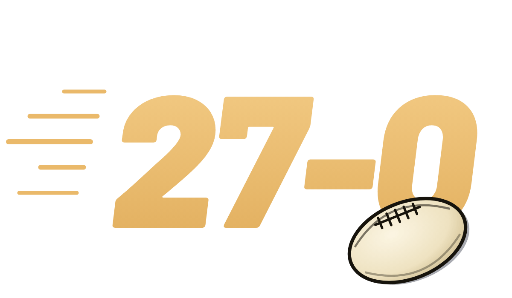

4000GOALS
4000GOALS
From the makers of 27-0 and 1000TRIES, The Cast Patrol brings you 4000 GOALS. Draft your 18 and attempt to hit 4000+ AFL goals combined.
- Roll 3Three random AFL players
- Pick 1Their goals stay hidden
- Hit 4000+Your 18’s goals add up

Can Your NRL Team Go 27-0?Our other game: spin, draft and simulate a full season. New: Six AgainMore tries or fewer? Call it before the clock runs out.
New: Play OnMore goals or fewer? Call it before the clock runs out.
New: Six AgainMore tries or fewer? Call it before the clock runs out.
New: Play OnMore goals or fewer? Call it before the clock runs out.
Watch the Latest
See All →Weekly NRL previews, tips and predictions from The Cast Patrol, the team behind this game.
Frequently Asked Questions
What is 4000 GOALS?
A free AFL footy game by The Cast Patrol. Draft a starting 18 of AFL players with their AFL goals hidden, then add them up. Can your 18 reach 4000 goals combined?
How do you play 4000 GOALS?
Pick a mode, then you are offered three random AFL players at a time. Choose one for your 18 without seeing their goals, and repeat until every spot from fullback to lock is filled. Your total is revealed as you go.
What are the modes?
4000+: reach 4000 goals or more, with one of each wildcard. Exactly 4000: land on 4000 on the dot, under or over is a miss, and it’s Hard Mode: no free wildcards, only paid ones, one of each a game. Team Spin: choose a position, then spin a club and season and pick from that squad.
What are Legends?
Now and then in 4000+, one offer is a Legends Pick: three of the game’s elite goalkickers, every one with 500+ career goals, from Gordon Coventry and Tony Lockett to Buddy Franklin. Their goals are hidden like everyone else’s, and they count their whole VFL and AFL careers. You get one at most per game, and a player who has fallen well behind late in a game is sometimes thrown one as a lifeline.
What is World Cup 200+?
Roll 3 Test players from the 2026 World Cup nations, plus Great Britain, Scotland and Italy, pick 1 and fill your 18 to reach 200 senior Test goals or more. Goals stay hidden until you pick, and each World Cup game’s goals are added once it finishes. World Legends, the international greats, can turn up in an offer, and a World Legend Pick lets you choose one, with his Test goals. Free with a CAST Profile, with its own leaderboard.
How do the leaderboards work?
Sign in free with a CAST Profile and pick a username. Your best game in every mode goes up automatically on today’s, this week’s and the all-time boards. Tap any name to see the 18 behind the score, with the luck of their draw. Exactly 4000 ranks the most exact 1000s, then the closest team.
Do I need an account?
No. You can play as a guest, and your games stay on this device. A free CAST Profile (Google or Apple, for ages 13 and over) saves your history, stats and trophies across 4000 GOALS and 27-0, puts you on the leaderboards and gives you wildcards every game.
What does the Luck number mean?
After each game we compare the goals on every card you were offered with what an average game deals you. Luck +23% means you drew 23% more goals than usual; a minus number means a tough draw. Your first offer and any Legends Pick are left out. You see it on your results and on leaderboard team sheets.
What are wildcards?
Reroll (Respin in Team Spin) gives you a fresh offer, Reveal Goals shows the goals for everyone on the current offer, and Remove Player takes one player out of your 18 so you can draft again. Each can be used once per game.
Which goals count?
VFL/AFL premiership goals from 1990, when the competition became the AFL, to now, finals included. Pre-season, State of Origin and international rules games are not included. Legends count their whole VFL/AFL careers.
Where do the goal numbers come from?
From AFL Tables (afltables.com), the public record of every VFL/AFL game since 1897. Each player’s position (back, midfield or forward) is worked out from his career stats. Spot something that looks wrong? Email cast@thecastpatrol.com.au.
Is 4000 GOALS free to play?
Completely free. No download needed. Open your browser, draft your 18 and play.
Is 4000 GOALS affiliated with the AFL?
No. 4000 GOALS is an independent, fan-made game. It is not affiliated with, endorsed by, or associated with the AFL or any AFL club.
Where can I listen to The Cast Patrol podcast?
Search The Cast Patrol wherever you get your podcasts, or watch on YouTube.